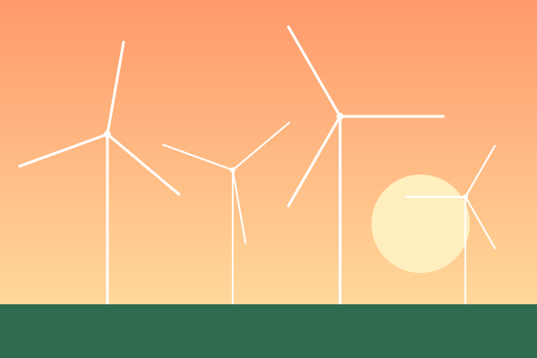
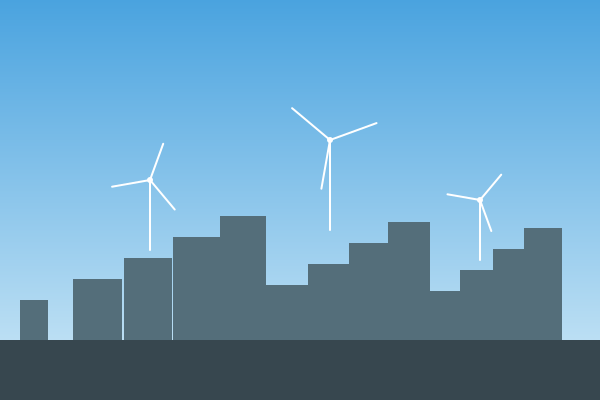
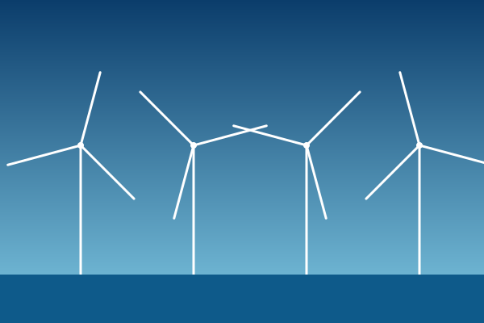
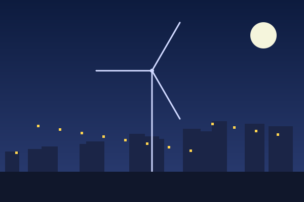
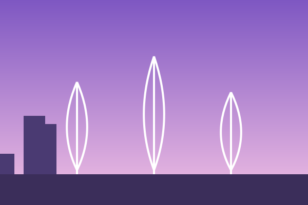
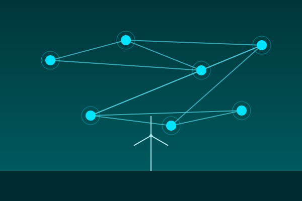
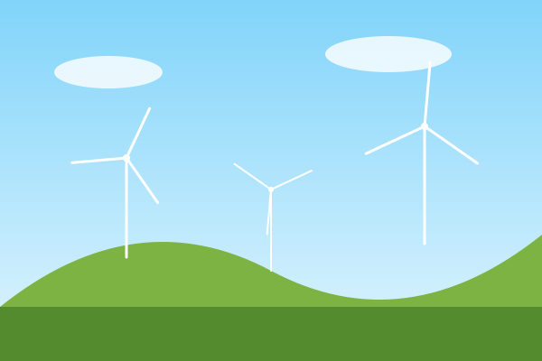
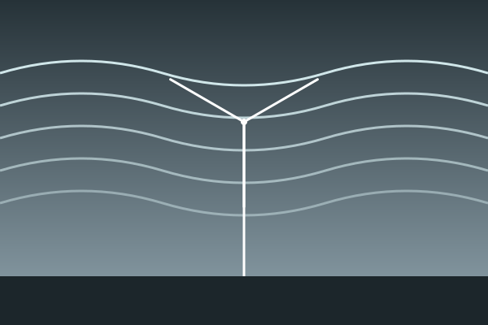

Local generation
Rooftop and vertical-axis turbines produce power right where it is used, cutting transmission losses.
Clean energy · Smart cities
WindWave explores how compact turbines, smart grids and sensors can turn urban wind into reliable, local, carbon-free power.
View the galleryRooftop and vertical-axis turbines produce power right where it is used, cutting transmission losses.
IoT sensors and a smart grid balance wind output with demand, storage and other renewables in real time.
Wind produces electricity with almost no emissions, helping cities reach net-zero targets.
Built with CSS Grid – columns and rows adapt to the screen width. Click any image to enlarge it.








Illustrative project figures for a practicum demonstration.